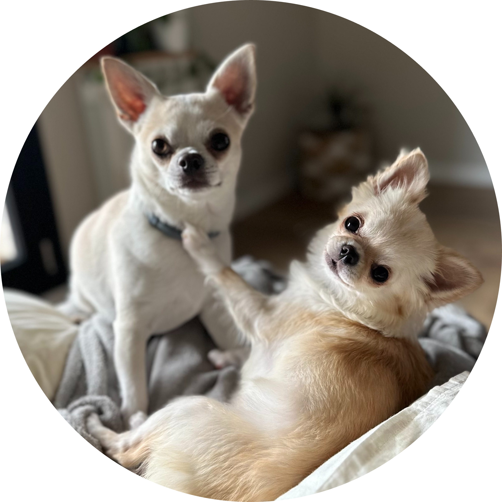
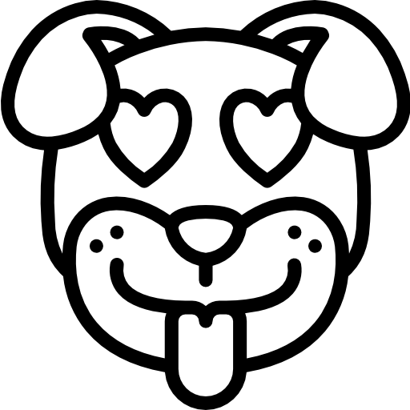

Hola somos Chiron & Kyomi
Somos unos perritos de raza Chihuahua que nos encanta divertirnos, en esta página podrás conocer más sobre nosotros y nuestras aventuras con nuestra familia, te invito a conocernos un poco más!!
Más sobre nosotros
